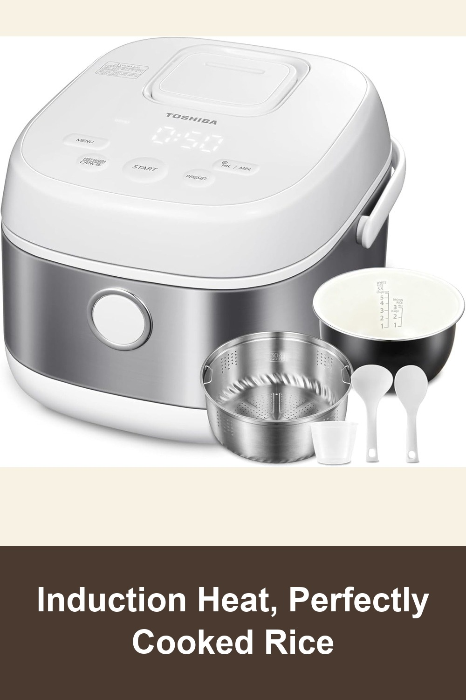
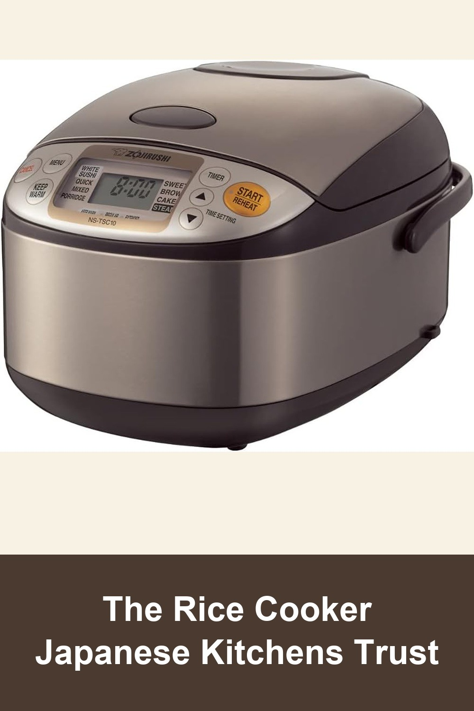
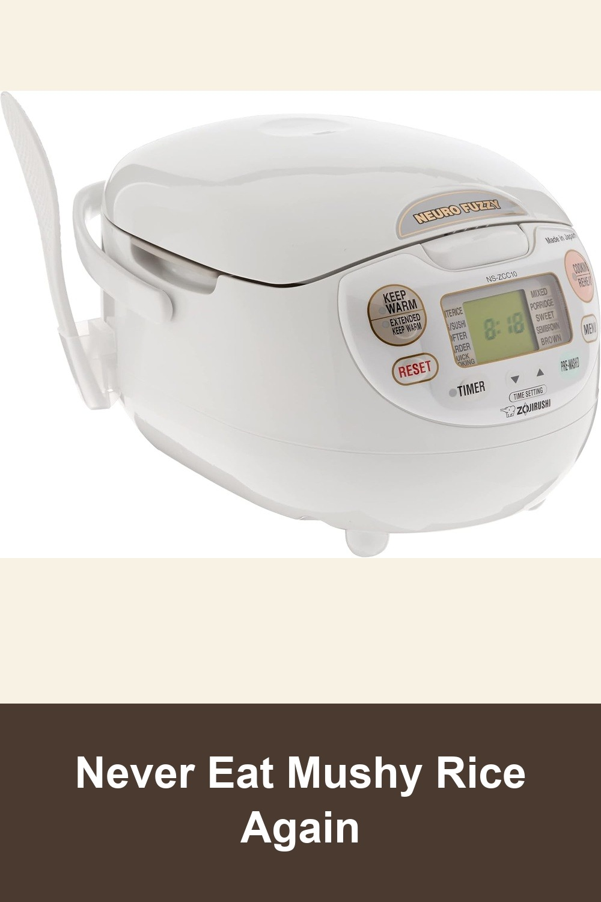

TOSHIBA Rice Cooker Induction Heating, 5.5 Cups
Toshiba's induction heating technology cooks every grain evenly for fluffy, restaurant-quality rice — comes with a steaming basket for veggies and dumplings in the same pot.
I'm honestly so impressed with this rice cooker. The rice comes out perfect every time, fluffy and delicious... This rice cooker is totally worth every penny. Highly recommend!— verified Amazon buyer
View on Amazon →
Zojirushi NS-TSC10 Micom Rice Cooker and Warmer
Zojirushi's Micom fuzzy-logic sensors adjust cooking time and temperature automatically — the best-selling Japanese rice cooker on Amazon, with nearly 14,000 five-star-heavy reviews.
So did my overcooked, split rice that I always forgot on the stove. I finally decided to order it, and just see if I liked it. I'm so happy I did! ...This machine makes each type of rice perfectly.— verified Amazon buyer
View on Amazon →
Zojirushi NS-ZCC10 Neuro Fuzzy Rice Cooker and Warmer
Neuro Fuzzy AI technology reads the rice-to-water ratio in real time for perfect texture every time — a splurge-worthy upgrade that lasts for years, Made in Japan.
This rice cooker is worth every single penny. It makes restaurant-quality rice so consistently that it honestly ruined every other rice cooker for me... Yes, it's more expensive than basic rice cookers, but this is one of those rare appliances where you immediately understand why.— verified Amazon buyer
View on Amazon →